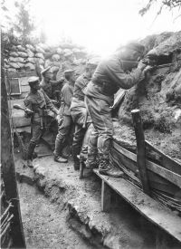
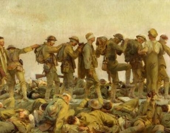

Khi nhắc tới cuộc chiến tranh này ta thấy được sự khốc liệt trong đó như người ta vẫn thường nói chiến tranh thế giới thứ nhất, còn được gọi là Đại chiến thế giới lần thứ nhất, Đệ nhất Thế chiến hay Thế chiến I là một cuộc chiến tranh thế giới diễn ra từ ngày 28 tháng 7 năm 1914 đến ngày 11 tháng 11 năm 1918. Cuộc chiến tranh này là một trong những sự kiện có ảnh hưởng nhất trong lịch sử thế giới.
Cuộc chiến tranh này là cuộc chiến xảy ra giữa phe Hiệp Ước (chủ yếu là Anh, Pháp, Nga và sau đó là Hoa Kỳ, Brasil) với phe Liên minh Trung tâm (chủ yếu là Đức, Áo-Hung, Bulgaria và Ottoman). Cuộc chiến bắt đầu với Vụ ám sát thái tử Áo-Hung, dẫn đến việc Áo
– Hung tuyên chiến với Serbia. Sự kiện này được nối tiếp bởi việc Hoàng đế Đức là Wilhelm II truyền lệnh cho các tướng lĩnh đưa quân tấn công Bỉ, Luxembourg và Pháp, theo kế hoạch Schlieffen. Hơn 70 triệu quân nhân được huy động ra trận chiến, trong số đó có 60 triệu người Âu châu, trong 1 trong những cuộc chiến tranh lớn nhất trong lịch sử. Trong cuộc chiến tranh kinh hoàng này, Pháp là nước chịu tổn thất nặng nề hơn cả và hoàn toàn bị kiệt quệ, dẫn tới sự đại bại của họ trong các cuộc chiến tranh về sau.
Những trận đánh khốc liệt nhất trong cuộc Chiến tranh thế giới lần thứ nhất cũng diễn ra trên đất Pháp. Một trận đánh đáng nhớ của cuộc Đại chiến là tại Verdun cùng năm đó, khi quân Đức tấn công thành cổ Verdun của Pháp, nhưng không thành công. Tuy nhiên, trận chiến đẫm máu nhất là tại sông Somme (1916), khi liên quân Anh – Pháp đánh bất phân thắng bại với quân Đức, trong khi chiến dịch quân sự lớn nhất là Cuộc tổng tấn công của Brusilov, khi quân Nga đánh bại liên quân Áo-Hung và Đức.

My Name is John
– Giai đoạn thứ nhất (1914 -1916)
+ Ngày 28 – 7 – 1914, Áo – Hung tuyên chiến với Xéc-bi, là nước được khối Hiệp ước ủng hộ.
+ Ngày 1-8, Đức tuyên chiến với Nga.
+ Ngày 3-8, tuyên chiến với Pháp.
+ Ngày 4-8, Anh tuyên chiến với Đức.
Chiến tranh đế quốc bùng nổ và nhanh chóng trở thành chiến tranh thế giới.
Giai đoạn này, chiến tranh chỉ diễn ra giữa các khối nước châu Âu, sau đó lôi kéo nhiều nước ở các châu lục khác cùng tham gia.Nhiều loại vũ khí hiện đại được đưa vào sử dụng. Hàng chục triệu nhân dân lao động bị thương vong vì lợi ích của giai cấp thông trị.
Trong giai đoạn thứ nhất của chiến tranh, tình trạng khốn cùng của nhân dân lao động ngày một thêm trầm trọng, đói rét, bệnh tật và những tai họa do chiến tranh gây ra càng nhiều. Trong khi đó, bọn trùm công nghiệp chiến tranh đã giàu lên nhờ buôn bán vũ khí. Mâu thuẫn xã hội trong các nước tham chiến trở nên vô cùng gay gắt. Chỉ hơn hai năm chiến tranh, đã có gần 6 triệu người chết và 10 triệu người bị thương. Phong trào công nhân, phong trào quần chúng phản đối chiến tranh phát triển nhanh chóng. Đến cuối năm 1916, tình thế cách mạng đã xuất hiện ở nhiều nước châu Âu.
– Giai đoạn thứ hai (1917 – 1918)
+ Tháng 2/1917, Cách mạng tháng Hai diễn ra ở Nga, buộc Mĩ phải sớm nhảy vào tham chiến và đứng về phe Hiệp ước (4 – 1917), vì thế phe Liên minh liên tiếp bị thất bại.
+ Cuối năm 1917, Phe Hiệp ước liên tiếp mở các cuộc tấn công làm cho đồng minh của Đức lần lượt đầu hàng.
+ Ngày 11/11/1918, Đức đầu hàng đồng minh vô điều kiện. Chiến tranh thế giới thứ nhất kết thúc với sự thất bại của phe Liên minh. Chiến tranh kết thúc với sự thất bại của phe Đức, Áo – Hung.
.
Hậu quả của chiến tranh thế giới thứ nhất để lại:

My Name is John
– Thiệt hại về người: 13,6 triệu người chết và khoảng 20 triệu người bị tàn phế.
– Thiệt hại về vật chất: Nhiều thành phố, làng mạc, đường sá, cầu cống, nhà máy bị phá hủy. Thiệt hại vật chất lên tới 338 tỷ USD. Số tiền các nước tham chiến chi phí cho chiến tranh vào khoảng 85 tỉ USD.
– Làm tổn thương về tâm lý cho nhiều thế hệ tại châu Âu.
– Châu Âu tụt hậu và vai trò lãnh đạo mà châu Âu đảm đương trong hơn 300 năm đã dần dần chuyển sang bên kia đại dương cho nước Mỹ.
– Trong quá trình chiến tranh, thắng lợi của Cách mạng tháng Mười Nga và việc thành lập Nhà nước Xô viết đánh dầu bước chuyển lớn trong cục diện chính trị thế giới.
.png)